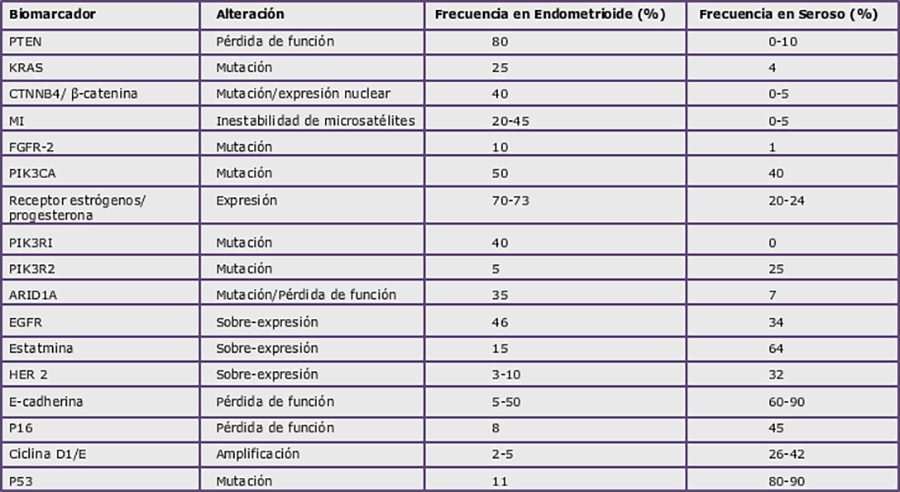
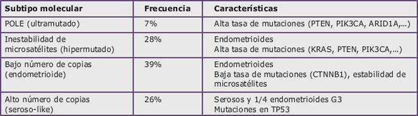

Cáncer de Endometrio

2.5 Anatomía Patológica y Biología Molecular
En la última clasificación de la Organización Mundial de la Salud (OMS) se distinguen 7 subtipos histológicos diferentes principales, a los que habría que añadir el carcinosarcoma ya que debe ser considerado un carcinoma desde el punto de vista biológico y terapéutico. Aproximadamente un 8% de los carcinomas de endometrio se asocia de manera sincrónica a un tumor ovárico de similar histología.
Carcinoma endometrioide
Representa casi el 80% de los CE, y es el prototipo del tipo I patogénico. Se reconocen cuatro variantes histológicas. Abarca un espectro de neoplasias con diferenciación histológica variable, que oscila entre los tumores bien diferenciados (grados 1 y 2) a los carcinomas sólidos y pobremente diferenciados (grado 3). Los grados histológicos se aplican exclusivamente a este subtipo histológico. Puede existir una diferenciación escamosa en el 25-50%. Suele expresar receptores de estrógeno y/o de progesterona.
Carcinoma seroso
Es el prototipo de tipo II patogénico y representa menos del 10%. En el endometrio todos los carcinomas serosos son de alto grado por definición. Es un subtipo histológico muy agresivo. Se asocial generalmente con la invasión miometrial profunda y extensa invasión linfovascular. Con frecuencia presenta una mutación de p53 con la subsiguiente alteración en su expresión.
Carcinoma de células claras
Es responsable del 5% de los CE. También se le considera dentro del tipo II patogénico y se asocia a mal pronóstico. No suele expresar receptores hormonales ni tener alteración de p53.
Carcinoma mixto
Los subtipos endometrioides y serosos pueden coexistir en un mismo tumor. Cuando uno de estos componentes está presente en al menos 5% del tumor, el tumor se diagnostica como un mixto. Para evitar un diagnóstico incorrecto se deben utilizar criterios rigurosos, y el diagnóstico debe ser confirmado con la ayuda de la patología molecular.
Carcinoma mucinoso
Supone el 1-9% de los CE. Al menos 50% de las células en el tumor debe contener mucina intracitoplasmática. Tiene el mismo pronóstico que el endometrioide y se parece, desde el punto de vista histológico, al carcinoma mucinoso de cérvix u ovario. Para ser considerado primario de endometrio se debe investigar que no exista un tumor de las mismas características en el cuello uterino.
Carcinoma indiferenciado/desdiferenciado
Se trata de un subtipo histológico que ha suscitado un gran interés en los últimos años. Supone del 1% al 10% de los carcinomas de endometrio, y se asocia con mucha frecuencia (40-50% de los casos) a MSI, y, por tanto, al Síndrome de Lynch. Se trata de un subtipo muy agresivo, de manera que en más del 50% de los casos se diagnostica en estadios avanzados.
Carcinoma neuroendocrino
Son tumores que raramente presentan localización endometrial. Pueden ser de alto y de bajo grado.
Carcinosarcoma
También llamado tumor mülleriano mixto maligno. Representa menos del 5% de los CE. Consta de un componente epitelial y otro estromal. Inicialmente fue considerado como un sarcoma, pero en la actualidad se le reconoce como un carcinoma metaplásico, en el que el componente epitelial suele ser seroso, y es clasificado como un tumor de alto grado que pertenece al tipo II patogénico. El tratamiento sistémico indicado es el mismo que el del carcinoma seroso. Se asocia a mal pronóstico.
Además de las diferencias morfológicas, los subtipos histológicos de CE presentan unas alteraciones claramente diferenciales con respecto a la biología molecular. En la siguiente tabla se describen las principales diferencias moleculares entre los dos subtipos más frecuentes: endometrioide y seroso.
Características moleculares de los subtipos de cáncer de endometrio endometrioide y seroso.
The Cancer Genome Atlas Research Network (TCGA) publicó un estudio en CE, donde se analizaron una serie 373 tumores con diferentes tipos de estudios moleculares (secuenciación de exoma y de miARN, análisis de metilación de ADN, expresión génica y expresión proteica). El análisis de secuenciación del exoma permitió realizar una clasificación molecular del CE, con los 4 subtipos que se describen en la siguiente tabla, que, como veremos más adelante, se asocian a un pronóstico claramente diferenciado.
Clasificación molecular del carcinoma de endometrio según el estudio TCGA.
A raíz del estudio del TCGA se elaboró un modelo llamado ProMisE (Proactive Molecular Risk Classifier for Endometrial Cancer), con el objetivo de poder identificar los 4 subtipos moleculares con una tecnología más accesible para los laboratorios de Anatomía Patológica (mediante la detección de mutaciones en POLE y el resto a través de inmunohistoquímica). Se estableció un algoritmo para llevar a cabo las determinaciones en forma de “árbol de decisión” (ver siguiente figura). Este modelo fue validado posteriormente en un estudio de cohortes con más de 500 pacientes, confirmando su valor pronóstico, como explicaremos más adelante.
Algortimo ProMisE (IHQ: Inmunohistoquímica; MMR-D: sistema MMR deficiente, POLE EDM: Mutaciones Dominio Exonucleasa en en el gen POLE; wt: wild type; abn: abnormal).